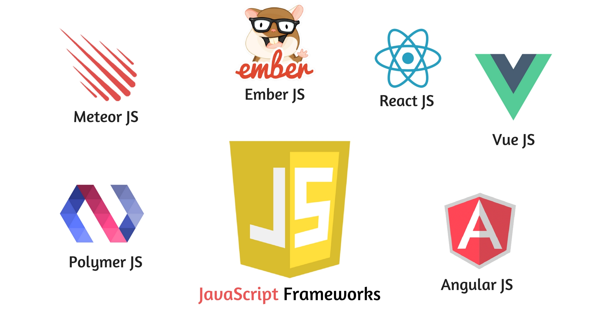

Фреймворки - это набор инструментов и библиотек, которые помогают
разработчикам упростить процесс создания программного обеспечения. Они предоставляют готовые решения
для общих задач и устанавливают определенную структуру разработки. Фреймворки способны значительно
ускорить разработку программного продукта благодаря своей архитектуре и набору уже готовых модулей.
Они предлагают стандартизированный подход к созданию приложений, что позволяет разработчикам
сосредоточиться на решении более специфичных задач, не заботясь о базовых функциях и инфраструктуре.
Множество фреймворков доступно для разных языков программирования и для различных целей. Например,
для создания веб-приложений широко используются фреймворки, такие как Django для Python, Ruby on
Rails для Ruby, Laravel для PHP и другие. Они предоставляют разработчикам ряд удобных инструментов
для работы с базами данных, обработки запросов, управления сеансами, маршрутизации и многое другое.
Фреймворки также помогают обеспечить безопасность программных продуктов, предоставляя инструменты
для защиты от атак и уязвимостей. Они также облегчают тестирование и отладку приложений,
предоставляя специальные инструменты для автоматизации тестов и отслеживания ошибок.

Классификация фреймворков
1. По предметной области:
● Веб-фреймворки - предназначены для разработки веб-приложений и обычно включают инструменты для
работы с HTTP, маршрутизацией, шаблонами и базами данных.
● Мобильные фреймворки - созданы специально для разработки приложений для мобильных устройств,
поддерживают функциональность, связанную с мобильными платформами, такие как управление
геолокацией, доступ к камере и другие.
● Игровые фреймворки - предоставляют набор инструментов и функциональность для разработки
компьютерных игр, включая графику, физику, аудио и управление вводом.
● Desktop фреймворки - разработаны для создания настольных приложений и включают инструменты для
работы с графикой, мультимедиа, базами данных и другими характерными функциями.
2. По языку программирования:
● Python фреймворки - разработаны специально для языка программирования Python, такие как
Django, Flask и Pyramid.
● PHP фреймворки - предназначены для разработки на PHP, такие как Laravel, Symfony и
CodeIgniter.
● JavaScript фреймворки - используются для разработки фронтенд-приложений на JavaScript, такие
как Angular, React и Vue.js.
● Ruby фреймворки - предназначены для Ruby, такие как Ruby on Rails и Sinatra.
3. По модели разработки:
● Full-stack фреймворки - предоставляют функциональность для разработки всех компонентов
приложения, включая фронтенд и бэкенд.
● Микрофреймворки - имеют минимальный набор функций и обычно используются для быстрой разработки
небольших приложений или в качестве базы для разработки собственного фреймворка.
4. По лицензии:
● Open-source фреймворки - имеют открытый исходный код и обычно доступны бесплатно для
использования
и модификации.
● Проприетарные фреймворки - разработаны компаниями и могут требовать покупку лицензии для
использования.
Классификация фреймворков может быть гибкой и зависит от многих факторов. Каждый фреймворк имеет свои
особенности и направлен на решение конкретных задач, поэтому выбор подходящего фреймворка зависит от
потребностей и предпочтений разработчика.
НАВЕРХ